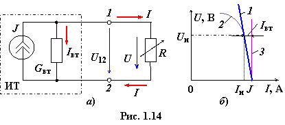

Источник электрического тока (ИТ) − это источник электрической энергии, характеризующийся электрическим током J и внутренней проводимостью Gвт.
На схеме замещения (рис. 1.14а)
независимый источник тока представляют в виде идеального ИТ (с бесконечно
большим сопротивлением) с заданным током J и параллельно с ним
соединенного элемента (резистора) с внутренней проводимостью Gвт, равной 1/Rвт, и, как правило, значительно меньшей, чем проводимость приёмника G = 1/R,
т. е.
Gвт << G и Rвт >> R.

Пренебрегая сопротивлением
проводов и принимая U12= U, можно записать
J = Iвт + I = GвтU12 + I = GвтU + I, (1.21)
где U = RI − напряжение на зажимах приёмника.
Из соотношения (1.21) получим
уравнение внешней характеристики ИТ, т.е. I = ƒ(U):
I = J − Iвт = J − GвтU. (1.22)
При увеличении сопротивления R приёмника,
начиная от режима КЗ (R = 0, I = J), ток I изменяется незначительно, практически по линейному закону, от значения J до номинального значения Iн (кривая 1, рис. 1.14б). При этом напряжение на зажимах ИТ изменяется в широких пределах (от нулевого значения до номинального значения Uн).
Если проводимость ИТ значительно
меньше проводимости приемника, т. е. Gвт << G (Rвт
>> R), то при U = U12 ток Iвт << J; при этом источник тока находится в режиме,
близком к режиму короткого замыкания (КЗ). Если значением тока Iвт можно пренебречь (Iвт = GвтU ≈ 0), то ветвь с элементом Gвт можно из схемы (см. рис. 1.14а) исключить. Такой источник энергии, обозначаемый на схемах в виде кружочка с двойной стрелкой с разрывом внутри (Rвт = ∞) с символом J, называют идеальным источником тока (источником с заданным током J).
Ток I = J идеального ИТ не зависит от сопротивления R приёмника, а потому его внешняя характеристика − прямая, параллельная оси ординат (линия 3, рис. 1.14б). Для идеального ИТ (Rвт = ∞) исключается режим ХХ (I = 0). Кривая 2 на рис. 1.14б − ВАХ реального ИТ.